A little collection
of big ideas.
Twelve fictional websites, made to explore what a thoughtful visual direction can do. Open an example to explore it.
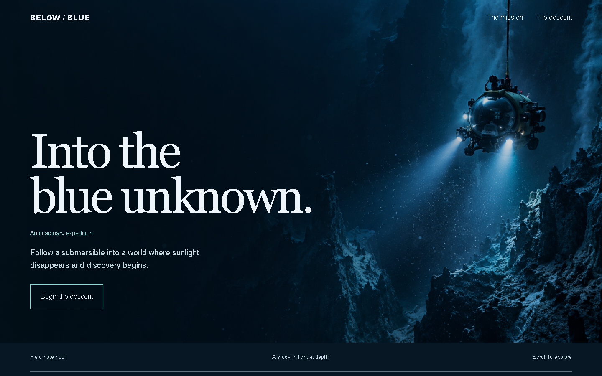
Below the Blue
A cinematic deep-sea expedition.
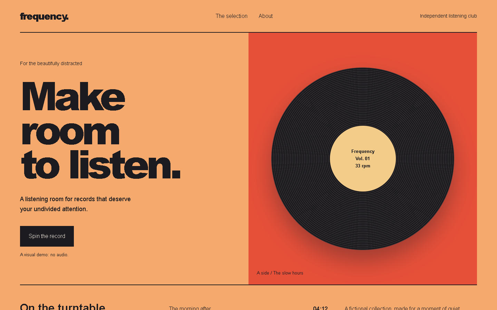
Frequency
A listening room with a spinning record.
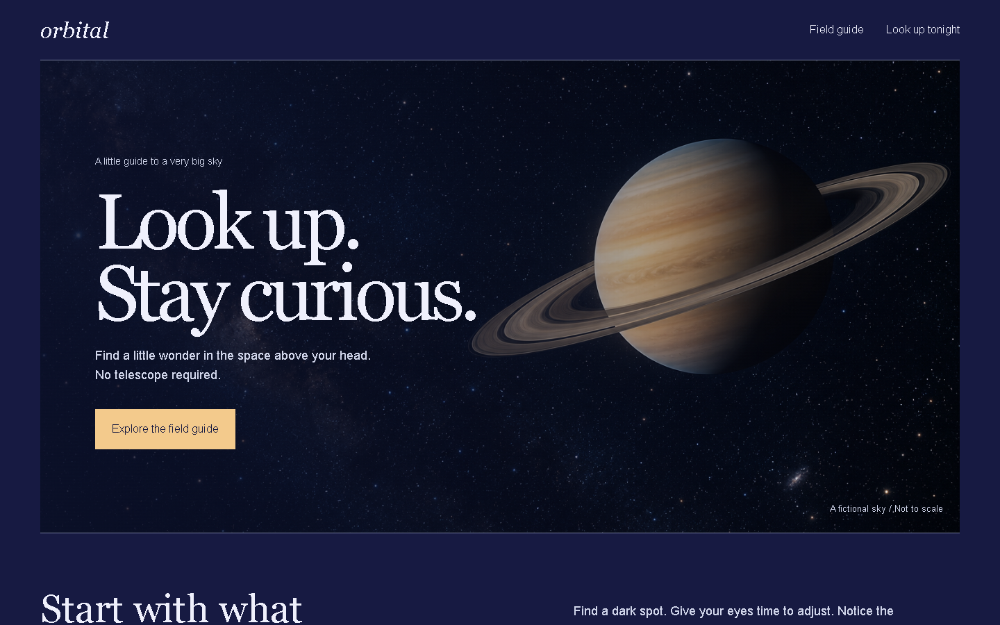
Orbital
A field guide to a very big sky.
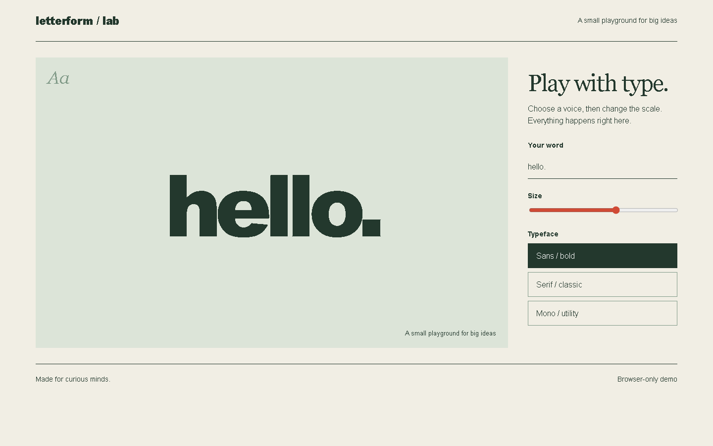
Letterform
A typography playground.
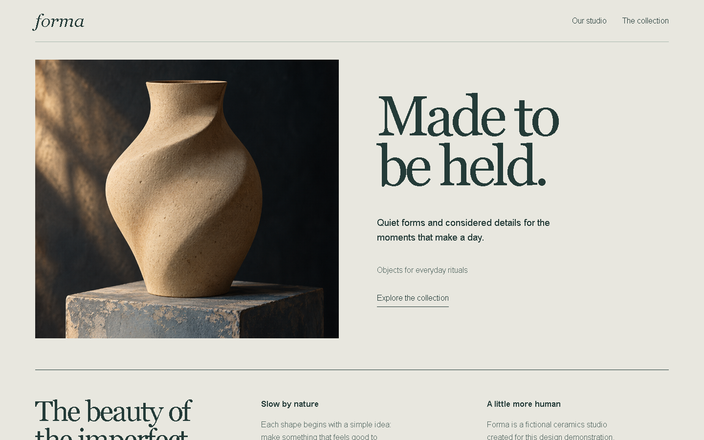
Forma
A quiet ceramics studio.
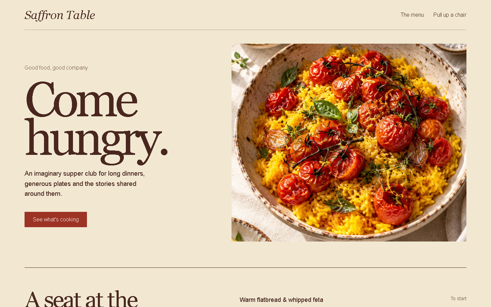
Saffron Table
A supper club with a generous menu.
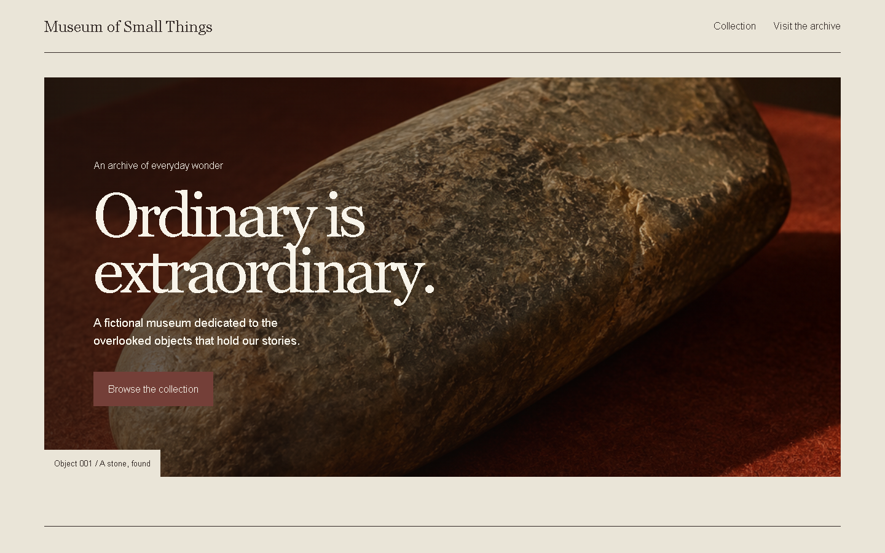
Museum of Small Things
An archive of everyday wonder.
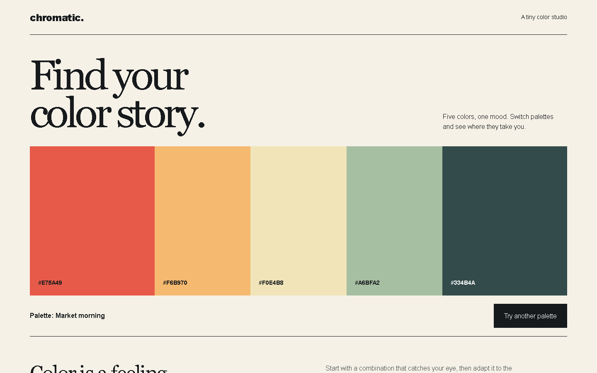
Chromatic
A little color explorer.
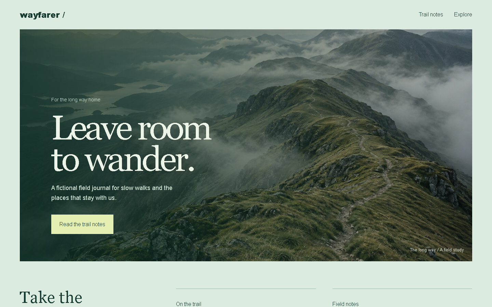
Wayfarer
A field journal for the long way home.
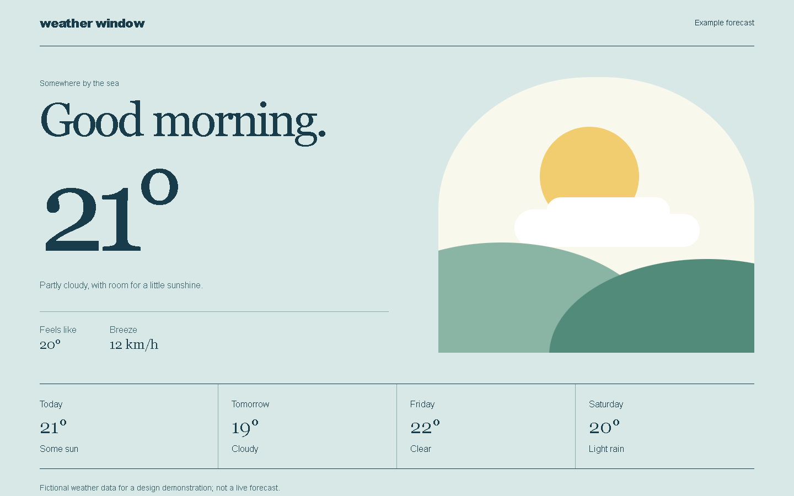
Weather Window
An illustrated, fictional forecast.
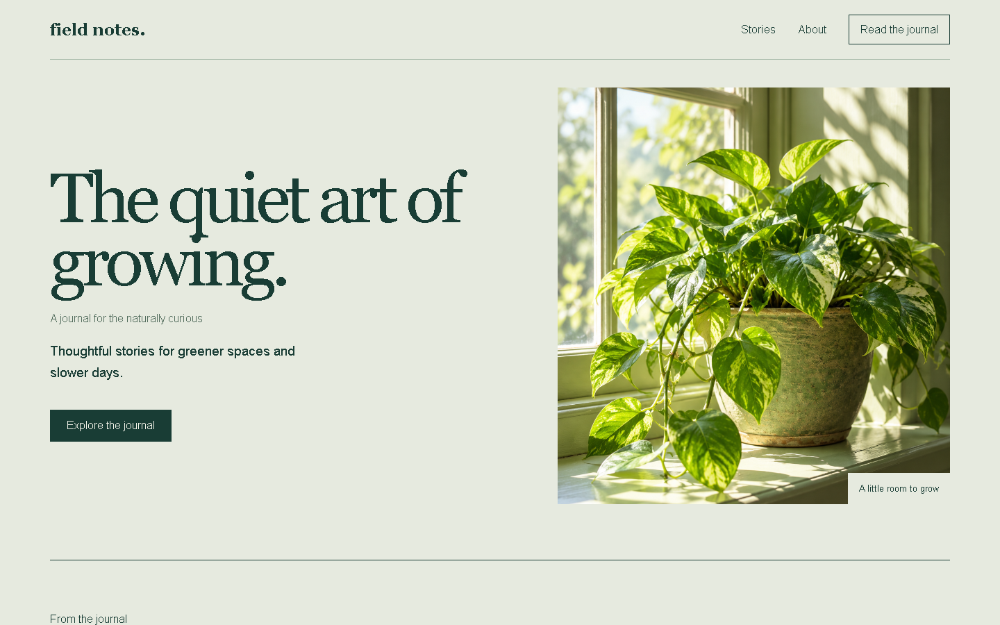
Field Notes
A journal for the naturally curious.
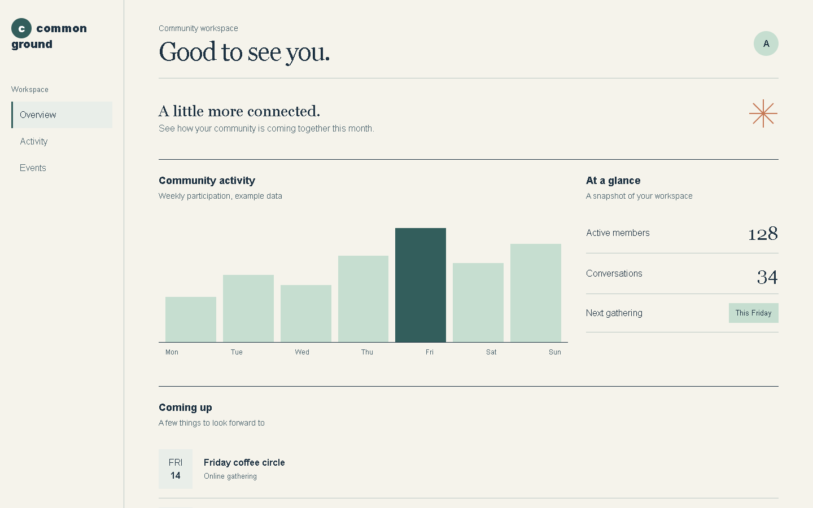
Common Ground
A community dashboard concept.